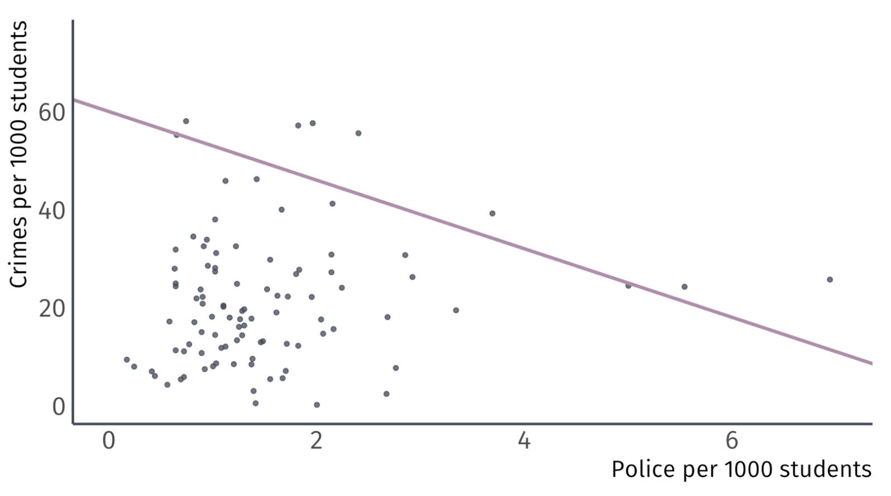
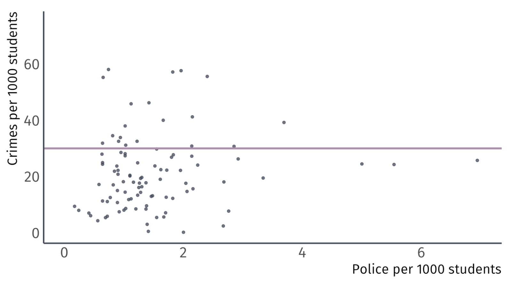
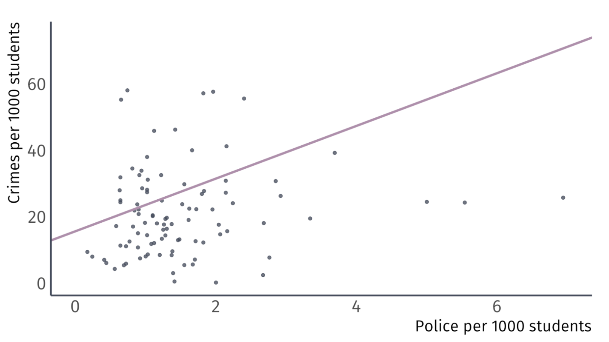
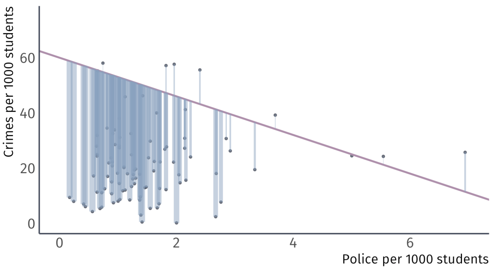
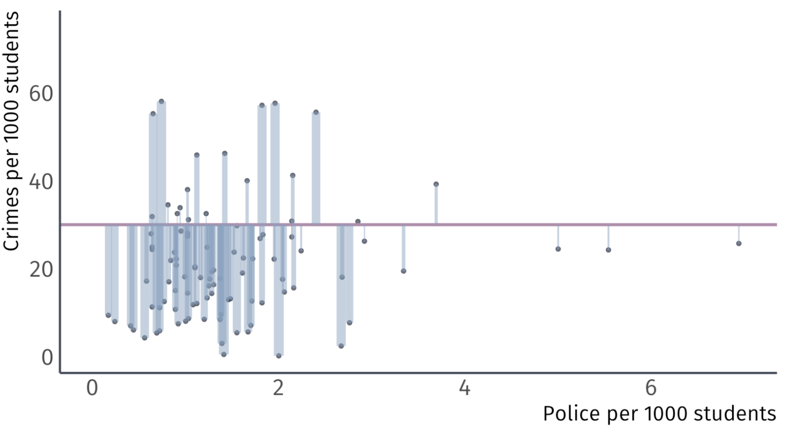
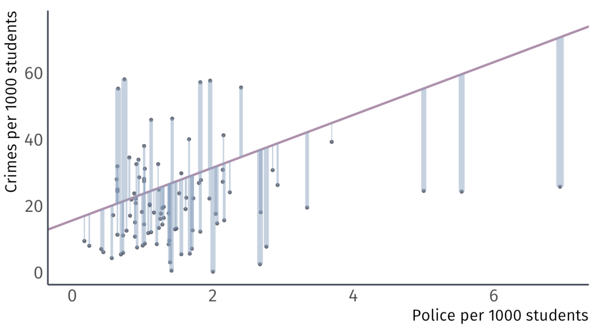
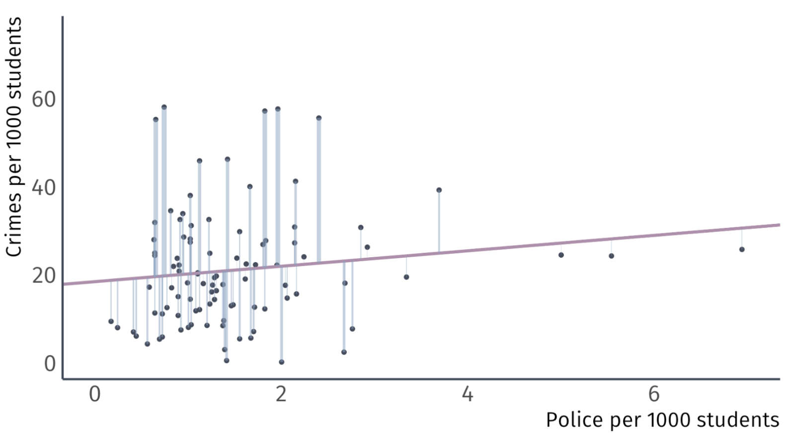

Estimators
EC 320 - Introduction to Econometrics
Jose Rojas-Fallas
2025
Why Estimate Things?
We estimate because we cannot measure everything
Suppose we want to know the average height of the US population.
- We only have a sample of 1 million Americans
How can we use these data to estimate the height of the population?
We will learn what we can do
Estimators
Estimators
Let’s define some concepts first:
Estimand
Quantity that is to be estimated in a statistical analysis
Estimator
A rule (or formula) for estimating an unknown population parameter given a sample of data
Estimate
A specific numerical value that we obtain from the smaple data by applying the estimator
Estimators Example
Suppose we want to know the average height of the population in the US
- We have a sample of 1 million Americans
So then we can identify our Estimand, Estimator, and Estimate
Estimand: The population mean \((\mu)\)
Estimator: The sample mean \((\bar{X})\)
\[ \bar{X} = \dfrac{1}{n} \sum_{i=1}^{n} X_{i} \]
- Estimate: The sample mean \((\hat{\mu} = 5'6'')\)
Properties of Estimators
There are many ways to estimate things and they all have their benefits and costs.
Imagine we want to estimate an unknown parameter \(\mu\), and we know the distributions of three competing estimators.
Which one should we use?

Properties of Estimators - Unbiasedness
We ask: What properties make an estimator reliable?
Answer (1): Unbiasedness
On average, does the estimator tend toward the correct value?
Formally: Does the mean of the estimator’s distribution equal the parameter it estimates?
\[ \text{Bias}_{\mu} (\hat{\mu}) = E[\hat{\mu}] - \mu \]
Properties of estimators
Question What properties make an estimator reliable?
A01: Unbiasedness
Unbiased estimator: \(E\left[ \hat{\mu} \right] = \mu\)
Biased estimator \(E\left[ \hat{\mu} \right] \neq \mu\)

Properties of Estimators - Efficiency
We ask: What properties make an estimator reliable?
Answer (1): Efficiency (Low Variance)
The central tendencies (means) of competing distribution are not the only things that matter. We also care about the variance of an estimator.
\[ Var(\hat{\mu}) = E \left[ (\hat{\mu} - E[\hat{\mu}])^{2} \right] \]
Lower variance estimators estimate closer to the mean in each sample
Properties of Estimators - Efficiency
Imagine low variance to be similar to accuracy \(\rightarrow\) tighter estimates

The Bias-Variance Tradeoff
Much like everything, there are tradeoffs from gaining one thing over another.
Should we be willing to take a bit of bias to reduce the variance?
In economics/causal inference, we emphasize unbiasedness

Unbiased estimators
In addition to the sample mean, there are other unbiased estimators we will often use
- Sample variance estimates the variance \(\sigma^{2}\)
- Sample covariance setimates the covariance \(\sigma_{XY}\)
- Sample correlation estimates the pop. correlation coefficient \(\rho_{XY}\)
Sample Variance
The sample variance, \(S_{X}^{2}\), is an unbiased estimator of the population variance
\[ S_{X}^{2} = \dfrac{1}{n - 1} \sum_{i=1}^{n} (X_{i} - \bar{X})^{2}. \]
Sample Covariance
The sample covariance, \(S_{XY}\), is an unbiaed estimator of the population covariance
\[ S_{XY} = \dfrac{1}{n-1} \sum_{i=1}^{n} (X_{i} - \bar{X})(Y_{i} - \bar{Y}). \]
Sample Correlation
Sample correlation, \(r_{XY}\), is an unbiased estimator of the population correlation coefficient
\[ r_{XY} = \dfrac{S_{XY}}{\sqrt{S_{X}^{2}}\sqrt{S_{Y}^{2}}}. \]
Estimators of Parameters of a Linear Model
Sidebar: Summation Rules
Before we continue, let’s cover some important rules we will need to derive some OLS things in the near future:
Summations \((\sum)\) have certain rules that we cannot violate and are important to hold in mind:
- \(\sum_{i=1}^{n} x_{i} = x_{1} + x_{2} + \cdots + x_{n}\)
- \(\sum_{i} x_{i} + y_{i} = \sum_{i} x_{i} + \sum_{i} y_{i}\)
- \(\sum_{i} x_{i} y_{i} \neq \sum_{i} x_{i} \sum_{i} y_{i}\)
Summation Rules
\[\sum_{i=1}^{n} x_{i} = x_{1} + x_{2} + \cdots + x_{n}\]
Let \(x\) be the set of \({1,5,2}\) \((x: \{1,5,2\})\) then using our summation rule we have:
\[ \sum_{i} x_{i} = 1 + 5 + 2 = 8. \]
Summation Rules
\[\sum_{i} x_{i} + y_{i} = \sum_{i} x_{i} + \sum_{i} y_{i}\]
Let \(x: \{1,5,2\}\) and \(y: \{1,2,1\}\), then using our summation rule we have:
\[\begin{align*} \sum_{i} x_{i} + y_{i} &= x_{1} + y_{1} + x_{2} + y_{2} + x_{3} + y_{3} \\ &= x_{1} + x_{2} + x_{3} + y_{1} + y_{2} + y_{3} \\ &= 1 + 5 + 2 + 1 + 2 + 1 \\ &= 12 \end{align*}\]
Summation Rules
\[\sum_{i} x_{i} y_{i} \neq \sum_{i} x_{i} \sum_{i} y_{i}\]
If we expand \(\sum_{i} x_{i} y_{i} \neq \sum_{i} x_{i} \sum_{i} y_{i}\), we get:
\[\begin{align*} x_{1}y_{1} + x_{2}y_{2} + x_{3}y_{3} \neq (x_{1} + x_{2} + x_{3})(y_{1} + y_{2} + y_{3}) \end{align*}\]
I’ll leave it to you to use the above numbers to show this holds
Linear Model Estimators
We will spend the rest of the course exploring how to use Ordinary Least Squares (OLS) to fit a linear model like:
\[ y_{i} = \beta_{0} + \beta_{1}x_{i} + u_{i}, \]
That is, if we wanted to hypothesize that some random variable \(Y\) depends on another random variable \(X\) and that there is a linear relationship between then, \(\beta_{0}\) and \(\beta_{1}\) are the parameters which describe the nature of that relationship.
Given a sample of \(X\) and \(Y\), we will derive unbiased estimators for the intercept \(\beta_{0}\) and slope \(\beta_{1}\). Those estimators help us combine observations of \(X\) and \(Y\) to estimate underlying relationships between them.
The Linear Regression Model
We can estimate the effect of \(X\) on \(Y\) by estimating the model:
\[ y_{i} = \beta_{0} + \beta_{1}x_{i} + u_{i}, \]
\(y_i\) is the dependent variable
\(x_i\) is the independent variable (continuous)
\(\beta_0\) is the intercept parameter. \(E\left[ {y_i | x_i=0} \right] = \beta_0\)
\(\beta_1\) is the slope parameter, which under the correct causal setting represents marginal change in \(x_i\)’s effect on \(y_i\). \(\frac{\partial y_i}{\partial x_i} = \beta_1\)
\(u_i\) is an Error Term including all other (omitted) factors affecting \(y_i\).
The Error Term \(u_{i}\)
\(u_{i}\) is quite special
Consider the data generating process of variable \(y_{i}\),
- \(u_{i}\) captures all unobserved variables that explain variation in \(y_{i}\)
Some error will exist in all models, no model is perfect.
- Our aim is to minimize error under a set of constraints
Error is the price we are willing to accept for a simplified model
The Error Term
Five items contribute to the existence of the disturbance term:
1. Omission of independent variables
- Our description (model) of the relationship between \(Y\) and \(X\) is a simplification
- Other variables have been left out (omitted)
The Error Term
Five items contribute to the existence of the disturbance term:
1. Omission of independent variables
2. Aggregation of Variables
- Microeconomic relationships are often summarized
- Ex. Housing prices (\(X\)) are described by county-level median home value data
The Error Term
Five items contribute to the existence of the disturbance term:
1. Omission of independent variables
2. Aggregation of Variables
3. Model misspecificiation
- Model structure is incorrectly specified
- Ex. \(Y\) depends on the anticipated value of \(X\) in the previous period, not \(X\)
The Error Term
Five items contribute to the existence of the disturbance term:
1. Omission of independent variables
2. Aggregation of Variables
3. Model misspecificiation
4. Functional misspecificiation
- The functional relationship is specified incorrectly
- True relationship is nonlinear, not linear
The Error Term
Five items contribute to the existence of the disturbance term:
1. Omission of independent variables
2. Aggregation of Variables
3. Model misspecificiation
4. Functional misspecificiation
5. Measurement error
- Measurement of the variables in the data is just wrong
- \(Y\) or \(X\)
The Error Term
Five items contribute to the existence of the disturbance term:
1. Omission of independent variables
2. Aggregation of Variables
3. Model misspecificiation
4. Functional misspecificiation
5. Measurement error
Running a Regression Model
Using an estimator with data on \(x_{i}\) and \(y_{i}\), we can estimate a fitted regression line:
\[ \hat{y}_{i} = \hat{\beta}_{0} + \hat{\beta}_{1}x_{i} \]
- \(\hat{y}_{i}\) is the fitted value of \(y_{i}\)
- \(\hat{\beta}_{0}\) is the estimated intercept
- \(\hat{\beta}_{1}\) is the estimated slope
This procedure produces misses, known as residuals \(y_{i} - \hat{y_{i}}\)
Let’s look at an example of how this works
Linear Model Example
Ex. Effect of police on crime
- Empirical question:
-
Does the number of on-campus police officers affect campus crime rates? If so, by how much?
Always plot your data first
Ex. Effect of police on crime
The scatter plot suggest that a weak positive relationship exists
- A sample correlation of 0.14 confirms this
But correlation does not imply causation
Lets estimate a statistical model
Ex. Effect of police on crime
We express the relationship between a dependent variable and an independent variable as linear:
\[ {\text{Crime}_i} = \beta_0 + \beta_1 \text{Police}_i + u_i. \]
\(\beta_0\) is the intercept or constant.
\(\beta_1\) is the slope coefficient.
\(u_i\) is an error term or disturbance term.
Ex. Effect of police on crime
The intercept tells us the expected value of \(\text{Crime}_i\) when \(\text{Police}_i = 0\).
\[ \text{Crime}_i = {\color{#BF616A} \beta_{0}} + \beta_1\text{Police}_i + u_i \]
Usually not the focus of an analysis.
Ex. Effect of police on crime
The slope coefficient tells us the expected change in \(\text{Crime}_i\) when \(\text{Police}_i\) increases by one.
\[ \text{Crime}_i = \beta_0 + {\color{#BF616A} \beta_1} \text{Police}_i + u_i \]
“A one-unit increase in \(\text{Police}_i\) is associated with a \(\color{#BF616A}{\beta_1}\)-unit increase in \(\text{Crime}_i\).”
Interpretation of this parameter is crucial
Under certain (strong) assumptions1, \(\color{#BF616A}{\beta_1}\) is the effect of \(X_i\) on \(Y_i\).
- Otherwise, it’s the association of \(X_i\) with \(Y_i\).
Ex. Effect of police on crime
The error term reminds us that \(\text{Police}_i\) does not perfectly explain \(Y_i\).
\[ \text{Crime}_i = \beta_0 + \beta_1\text{Police}_i + {\color{#BF616A} u_i} \]
Represents all other factors that explain \(\text{Crime}_i\).
- Useful mnemonic: pretend that \(u\) stands for “unobserved” or “unexplained.”
Ex. Effect of police on crime
How might we apply the simple linear regression model to our question about the effect of on-campus police on campus crime?
\[ \text{Crime}_i = \beta_0 + \beta_1\text{Police}_i + u_i. \]
- \(\beta_0\) is the crime rate for colleges without police.
- \(\beta_1\) is the increase in the crime rate for an additional police officer per 1000 students.
Ex. Effect of police on crime
How might we apply the simple linear regression model to our question?
\[ \text{Crime}_i = \beta_0 + \beta_1\text{Police}_i + u_i \]
\(\beta_0\) and \(\beta_1\) are the unobserved population parameters we want
We estimate
\(\hat{\beta_0}\) and \(\hat{\beta_1}\) generate predictions of \(\text{Crime}_i\) called \(\widehat{\text{Crime}_i}\).
We call the predictions of the dependent variable fitted values.
- Together, these trace a line: \(\widehat{\text{Crime}_i} = \hat{\beta_0} + \hat{\beta_1}\text{Police}_i\).
So, the question becomes, how do I pick \(\hat{\beta_0}\) and \(\hat{\beta_1}\)
Let’s take some guesses: \(\hat{\beta_0} = 60\) and \(\hat{\beta}_{1} = -7\)
Let’s take some guesses: \(\hat{\beta_0} = 30\) and \(\hat{\beta}_{1} = 0\)
Let’s take some guesses: \(\hat{\beta_0} = 15.6\) and \(\hat{\beta}_{1} = 7.94\)
Residuals
Using \(\hat{\beta}_{0}\) and \(\hat{\beta}_{1}\) to make \(\hat{y}_{i}\) generates misses.
 \(\hat{\beta_0} = 60 \;\) Guess
 \(\hat{\beta_0} = 30 \;\) Guess
 \(\hat{\beta_0} = 15 \;\) Guess
Residuals Sum of Squares (RSS)
What if we picked an estimator that minimizes the residuals?
Why do we not minimize:
\[ \sum_{i=1}^{n} \hat{u}_{i}^{2} \]
so that the estimator makes fewer big misses?
This estimator, the residual sum of squares (RSS), is convenient because squared numbers are never negative so we can minimze an absolut sum of the residuals
RSS will give bigger penalties to bigger residuals
Minimizing RSS
We could test thousands of guesses of \(\beta_0\) and \(\beta_1\) an pick the pair the has the smallest RSS
We could painstakingly do that, and eventually figure out which one fits best.
Or… We could just do a little math
Ordinary Least Squares
OLS
The OLS Estimator chooses the parameters \(\hat{\beta}_{0}\) and \(\hat{\beta}_{1}\) that minimize the Residual Sum of Squares (RSS)
\[ \min_{\hat{\beta}_{0},\hat{\beta}_{1}} \sum_{i=1}^{n} \hat{u}_{i}^{2} \]
This is why we call the estimator ordinary least squares
Recall that residuals are given by \(y_{i} - \hat{y}_{i}\) and that:
\[ \hat{y}_{i} = \hat{\beta}_{0} + \hat{\beta}_{1} x_{i} \]
Then
\[ u_{i} = y_{i} - \hat{\beta}_{0} + \hat{\beta}_{1} x_{i} \]
OLS & Calculus
We can find our choices \(\hat{\beta}_{0}\) and \(\hat{\beta}_{1}\) to minimize our residuals using calculus
A minimization problem is essentially the same as an optimization problem where we find the point at which our choices have a slope of zero
To begin, let’s properly write out our minimization problem:
\[ \min_{\hat{\beta}_{0}, \hat{\beta}_{1}} \;\; \sum_{i} u_{i}^{2} \]
\[ \min_{\hat{\beta}_{0}, \hat{\beta}_{1}} \; \sum_{i} (y_{i} - \hat{y}_{i})^{2} \]
\[ \min_{\hat{\beta}_{0}, \hat{\beta}_{1}} \; \sum_{i} (y_{i} - \hat{\beta}_{0} - \hat{\beta}_{1}x_{i}) (y_{i} - \hat{\beta}_{0} - \hat{\beta}_{1}x_{i}) \]
OLS & Calculus
The calculus we’ll use is by finding the derivatives of the function with respect to \(\hat{\beta}_{0}\) and \(\hat{\beta}_{1}\).
It’s a lot of algebra but it is simple math, just a lot of it:
\[\begin{align*} \min_{\hat{\beta}_{0}, \hat{\beta}_{1}} &\; \sum_{i} y_{i}^{2} - \hat{\beta}_{0}y_{i} - \hat{\beta}_{1}x_{i}y_{i} - \hat{\beta}_{0}y_{i} + \hat{\beta}_{0}^{2} + \hat{\beta}_{0}\hat{\beta}_{1}x_{i} - \hat{\beta}_{1}x_{i}y_{i} + \hat{\beta}_{0}\hat{\beta}_{1}x_{i} + \hat{\beta}_{1}^{2}x_{i}^{2} \\ \min_{\hat{\beta}_{0}, \hat{\beta}_{1}} &\; \sum_{i} y_{i}^{2} - 2 \hat{\beta}_{0}y_{i} + \hat{\beta}_{0}^{2} - 2 \hat{\beta}_{1}x_{i}y_{i} + 2\hat{\beta}_{0}\hat{\beta}_{1}x_{i} + \hat{\beta}_{1}^{2}x_{i}^{2} \end{align*}\]
Then, we take partial derivatives over our choices \(\hat{\beta}_{0}\) and \(\hat{\beta}_{1}\) to figure the best choices.
These are called First Order Conditions (FOCs)
OLS & Calculus
To find our choices, we find the partial derivative and set it equal to 0
For our intercept \(\hat{\beta}_{0}\):
\[\begin{align*} &\dfrac{\partial u_{i}}{\partial \hat{\beta}_{0}} = 0 \\ \sum_{i} -2y_{i} + &2\hat{\beta}_{0} + 2\hat{\beta}_{1}x_{i} = 0 \end{align*}\]
For our slope \(\hat{\beta}_{1}\):
\[\begin{align*} &\dfrac{\partial u_{i}}{\partial \hat{\beta}_{1}} = 0 \\ \sum_{i} -2x_{i}y_{i} + &2\hat{\beta}_{0}x_{i} + 2\hat{\beta}_{1}x_{i}^{2} = 0 \end{align*}\]
\(\hat{\beta}_{0}\) Derivation
\[ \sum_{i} -2y_{i} + 2\hat{\beta}_{0} + 2\hat{\beta}_{1}x_{i} = 0 \]
Our task is to find solve the above for \(\hat{\beta}_{0}\):
\(\hat{\beta}_{1}\) Derivation
\[ \sum_{i} -2x_{i}y_{i} + 2\hat{\beta}_{0}x_{i} + 2\hat{\beta}_{1}x_{i}^{2} = 0 \]
Our task is to find solve the above for \(\hat{\beta}_{1}\):
OLS Formulas
Intercept
\[ \hat{\beta}_{0} = \bar{y} - \hat{\beta}_{1}\bar{x} \]
Slope Coefficient
\[ \hat{\beta}_{1} = \dfrac{ \sum_{i=1}^{n} (y_{i} - \bar{y})(x_{i} - \bar{x}) }{ \sum_{i=1}^{n} (x_{i} - \bar{x})^{2} } \]
These may look slightly different to my derivation. Part of your assignments is to bridge the gap.
Coefficient Interpretation
Interpretation
There are two stages of interpretation of a regression equation
Interpret regression estimates into words
Deciding whether this interpretation should be taken at face value
Both stages are important, but for now, we will focus on the first
Let’s revisit our crime example
Ex: Effect of Police on Crime
Using the OLS formulas, we get \(\hat{\beta}_{0} = 18.41\) and \(\hat{\beta}_{1} = 1.76\)
Coefficient Interpretation
How do I interpret \(\hat{\beta}_{0} = 18.41\) and \(\hat{\beta}_{1} = 1.76\)?
The general interpration of the intercept is the estimated value of \(y_{i}\) when \(x_{i} = 0\)
And the general interpretation of the slope parameter is the estimated change \(y_{i}\) for the marginal increase \(x_{i}\)
First, it is important to understand the units:
\(\widehat{\text{Crime}}_{i}\) is measured as a crime rate, the number of crimes per 1,000 students on campus
\(\text{Police}_{i}\) is also measured as a rate, the number of police officers per 1,000 students on campus
Coefficient Interpretation
Using OLS gives us the fitted line
\[ \widehat{\text{Crime}_i} = \hat{\beta}_1 + \hat{\beta}_2\text{Police}_i. \]
What does \(\hat{\beta_0}\) = \(18.41\) tell us? Without any police on campus, the crime rate is \(18.41\) per 1,000 people on campus
What does \(\hat{\beta_1}\) = \(1.76\) tell us? For each additional police officer per 1,000, there is an associated increase in the crime rate by \(1.76\) crimes per 1,000 people on campus.
Does this mean that police cause crime? Probably not.
This is where deciding if the interpretation should be taken at face value. It now becomes your job to bring reason to the values.
EC320, Lecture 02 | Estimators